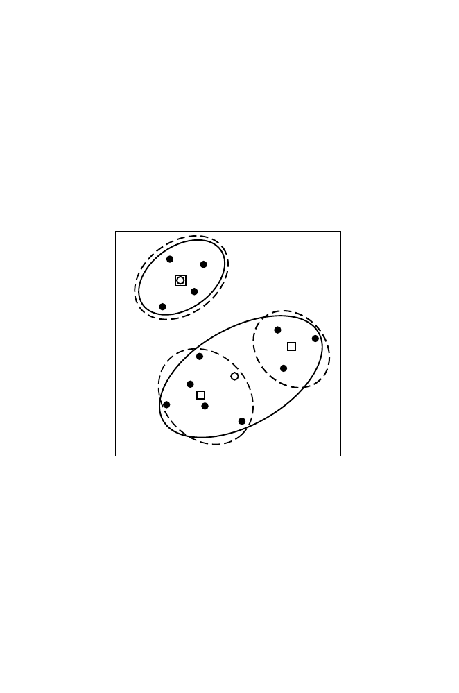

10.5
K
-means
279
within-ss, cluster
j
=
i
d
2
ij
, i
= 1
, . . . , m
j
,
total within-ss
S
=
j
i
d
2
ij
, i
= 1
, . . . , m
j
;
j
= 1
, . . . , k.
This is illustrated in Fig. 10.5 for two alternative values of
k
:
k
= 2 and
k
= 3. Increasing
k
from 2 to 3 splits the larger cluster at the bottom into
two clusters, leaving the one at the top unchanged. The
K
-means calculation
involves trying different centroid positions and iteratively testing each OTU
for its distance to one of the centroids. Each OTU is assigned membership
to the cluster whose centroid is closest. Once the cluster memberships are
assigned after each iteration, new centroid positions are calculated, and the
process is repeated.
Fig. 10.5.
K
-means clustering of 12 objects (filled circles) having two characters.
Clusters for
k
= 2 (solid lines) and
k
= 3 (dashed lines) are indicated. Cluster
centers for
k
= 2 or
k
= 3 are denoted by open circles or squares, respectively.
It is prudent to plot the data for a visual “reality check.” This is easy if
there are just two dimensions, but if there are many dimensions, we will need
to look at projections of the data on planes defined by coordinate pairs. It
is also useful to repeat the process with different partitions or initial group
centers. This is because some choices of initial partitioning may be bad, and
results may be affected by outliers (OTUs whose coordinates are very different
from those of other OTUs). We should also repeat the process for different val-